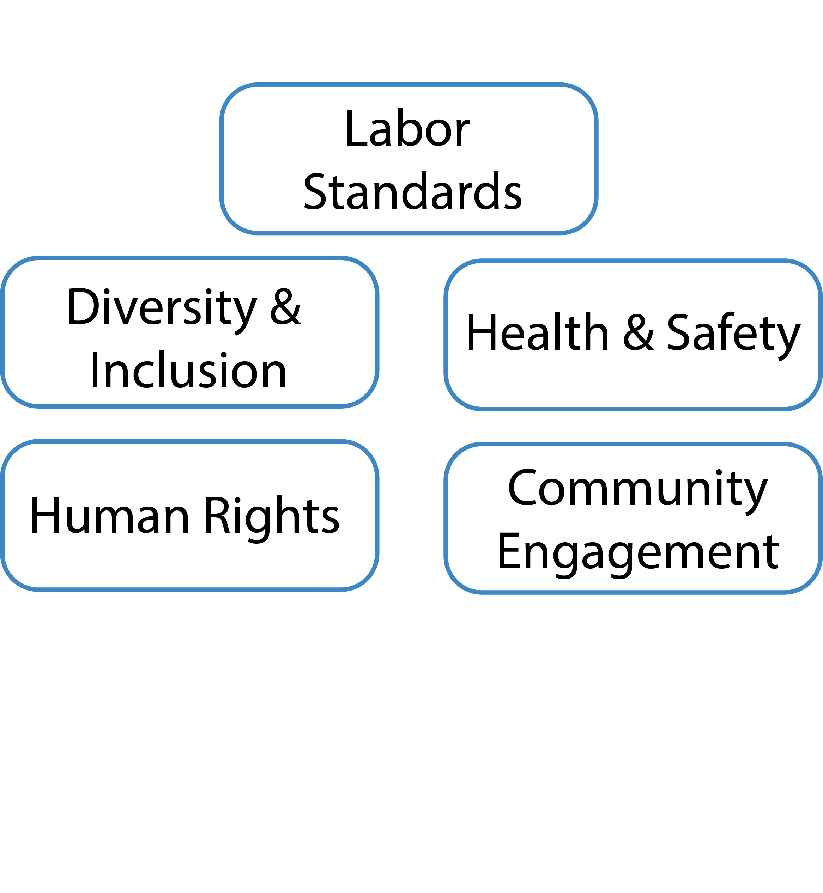
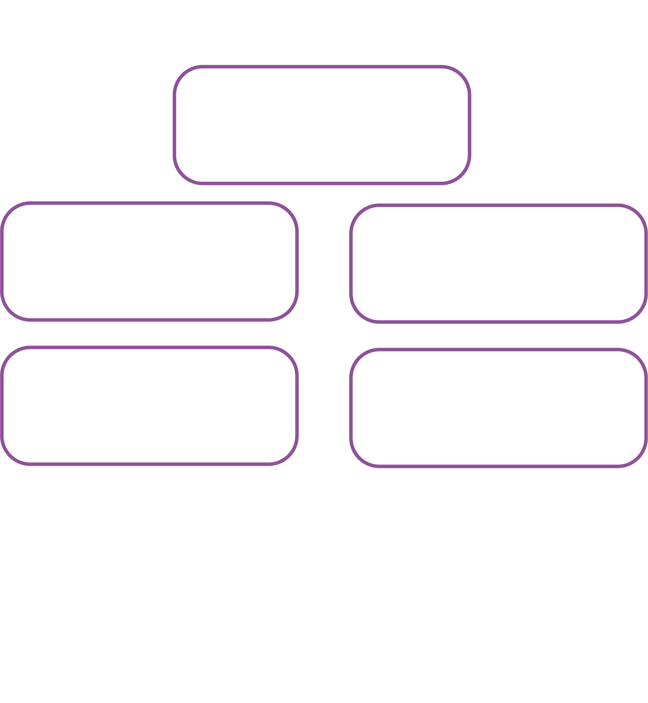

ESG (Environmental, Social, and Governance) is a set of criteria that measures how well companies are performing in terms of sustainability and social responsibility. ESG KPIs, related to sustainability, social responsibility, and corporate governance. These KPIs help companies evaluate their progress in meeting ESG goals and communicate their sustainability efforts to stakeholders.
Environment KPIs
This aspect focuses on a company's impact on the environment. It considers factors such as climate change, carbon emissions, pollution, resource depletion, waste management, and energy efficiency. Environmental criteria evaluate a company's commitment to sustainable practices, renewable energy, conservation efforts, and adherence to environmental regulations.
Social KPIs
The social component of ESG looks at a company's impact on society, including its employees, customers, suppliers, and local communities. Social factors encompass aspects such as human rights, labor standards, employee diversity and inclusion, health and safety practices, product safety, customer satisfaction, community engagement, and philanthropy. It also considers how companies manage relationships with stakeholders and address concerns related to social issues.
Governance KPIs
Governance refers to the system of rules, practices, and processes through which a company is directed and controlled. It includes aspects such as board composition, executive compensation, shareholder rights, transparency, accountability, and ethical behavior. Good governance ensures that a company has strong management structures, operates with integrity, and protects the interests of its stakeholders.
ESG Reports
XPO
Maersk
Kuehne + Nagel
Forecast
About Prophet AI Tool:
Prophet is an open-source library for Python that is designed to make it easier for analysts and data scientists to forecast time series data. It provides a simple interface for fitting and making predictions using additive models, which can handle various types of time series patterns such as trend, seasonality, and holiday effects.
Forecast Visualization
Forecast Table
{% for data in forecast_data %}{{ data.parameter }}
| Year | Forecast |
|---|---|
| {{ row[1]['ds'].strftime('%Y') }} | {{ row[1]['yhat']|round(1, 'floor') }} |
Forecast Chart
{% for chart in chart_paths %}{% endfor %}